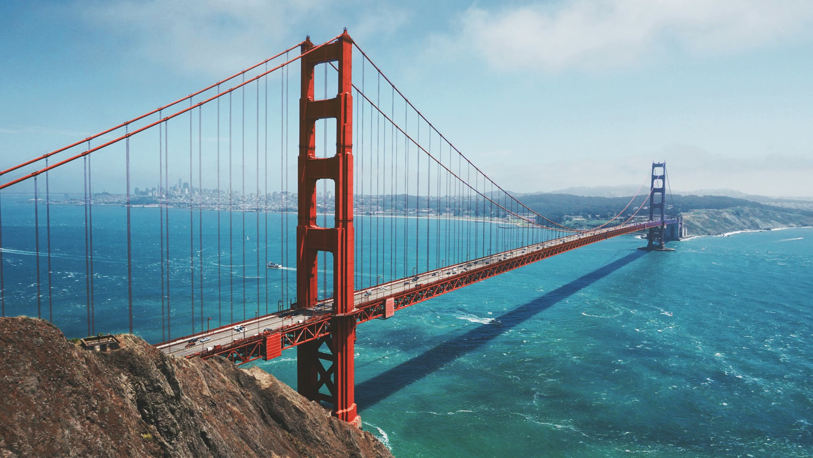

California · San Francisco
Best things to do in San Francisco
The Wharf, the bridge, and a Mission dinner do not fit in one morning.

The city is small. The mistake is booking the Wharf, the bridge, and a Mission dinner into the same morning. A February 2025 r/AskSF thread with a long top comment tells first-timers to sleep in North Beach and visit the Mission, not the other way around: North Beach already has the mornings, and the Mission’s grittier blocks are easier to visit than to wake up in. A January 2026 comment lists the neighborhoods that actually feel different: Chinatown with North Beach, the Haight and Golden Gate Park, the Mission and Dolores, the Presidio, and Lands End at the end of the day. That is a better list than another hour on Jefferson Street.
If you only have one day
Chinatown, North Beach, and one hill. Cable car once if the line at Powell and Market is not the whole morning. Powell-Hyde is the line over Nob Hill to Hyde and Beach. SFMTA lists it 7 a.m. to 11 p.m. From 8 a.m. to 8 p.m. you pay before you board at the turnaround. The cars are not wheelchair accessible. If someone cannot board, take the F-line and do not apologize.
Eat in North Beach, not on the Wharf. Golden Boy, 542 Green Street, is the slice counter. The scores are high and the point is a slice, not a reservation. Swan Oyster Depot, 1517 Polk Street, is the counter where the line is the reservation. A March 2026 Tripadvisor review says bring cash. Go early or skip it. Do not do both and a ferry.
Skip this
Fisherman’s Wharf as the day. Go for the sea lions and the ferry landing, then leave. Pier 33 is the Alcatraz dock. There is no parking at the landing. Meters are often shorter than the visit. The F-line passes it.
Alcatraz only if the ferry is already booked. The park says plan a few hours, bring a layer, and expect no real meal on the island. It owns the half day. Do not add the bridge.
The bridge walk is the other half day. Pedestrians on the east sidewalk only. In daylight time it is open until 9 p.m. In standard time it closes at 6:30 p.m. Dogs, other than service animals, stay home. Parking is a bad plan. The bridge district says so.
Do this instead
Crissy Field, if the bridge is the walk
The Presidio describes Crissy Field as the bay shore at the Golden Gate: beach, picnic, and the Golden Gate Promenade, which is one of the easier walks in the park. East Beach parking is free. The West Bluff lot is paid. Muni 30 stops at Mason and Yacht, Mason and Halleck, and the Sports Basement lot. The 28 stops at Richardson and Francisco. A threatened snowy plover uses the west end for much of the year. This is the walk that makes the bridge feel like a park instead of a sidewalk with a tour bus.
The Mission, on the day you do not have a ferry
La Taqueria, 2889 Mission, is the burrito the arguments are about. Yelp’s big count is a 4.1. Tripadvisor is a 4.4 on fewer reviews. The shop’s site is a casual Mission counter. Recent Tripadvisor notes say the line moves and the area is a daytime walk. Go for the carne asada. Do not go at 8 p.m. on a Monday if the posted hours say it is closed. The Yelp listing showed Monday and Tuesday closed when it was checked. Confirm before you cross town.
Dolores Park is the hill above the burritos. Clarion Alley is the mural stop SF Travel names. Valencia is the shop street. That is a day. It is not a side errand after Alcatraz.
Tartine, if the Mission morning is pastry
600 Guerrero Street. The line is the reputation. An October 2026 Tripadvisor review says it moves, and that the croissant is the reason. Yelp’s huge count sits a bit under Tripadvisor. Go early, or pick La Taqueria and skip the bakery line.
The west side, if you have a second full day
The Haight, then Golden Gate Park. The January 2026 comment calls the park the one visitors skip and should not, and puts the de Young and the Academy inside it. Tickets and hours are on each museum’s site. They are not repeated here. Lands End and the Sutro Baths ruins are the ocean end of that day. Bring a layer. The specific trail page did not load for this check, so use the Golden Gate National Recreation Area site before you depend on a staircase.
Coit Tower is the North Beach hill, not a separate day. AskSF commenters who like North Beach tell you to walk up. The elevator fee and hours belong to the Recreation and Park department. Check them. Do not miss a ferry for the elevator.
The Painted Ladies are the row of Victorians facing Alamo Square. They are a twenty-minute look, not an afternoon. Pair them with the Haight if you are already going west. Do not Uber across the city only for the postcard.
The expensive rooms people argue about
House of Prime Rib is the reservation that eats the evening. Google’s score is high and the count is huge. Book it or do not talk about it. Zuni is the Hayes Valley room for a long lunch. Burma Superstar, in the Inner Richmond, is the tea-leaf salad line, and it belongs on the Golden Gate Park day, not the Wharf day.
From the airport
BART from the International Terminal is about 30 minutes to downtown on a Yellow or Red line train. Sunday morning service starts later. Do not plan the bridge walk and an early Sunday flight on the same hour.
Sources
Hours, fares, and closures change. Ratings are the scores and review counts read in October 2026. Community notes are paraphrased from threads linked below.
- Golden Gate Bridge, sidewalks
- Golden Gate Bridge, parking
- NPS, Alcatraz
- SFMTA, cable cars
- SFMTA, Powell-Hyde
- Presidio, Crissy Field
- San Francisco Travel, neighborhoods
- San Francisco Travel, Fisherman’s Wharf
- San Francisco Travel, North Beach
- San Francisco Travel, Mission
- BART, airport
- La Taqueria
- r/AskSF, Mission or North Beach, Feb 2025
- r/AskSF, where to stay, Feb 2026
- r/AskSF, neighborhoods, Jan 2026
Last checked: October 2026.